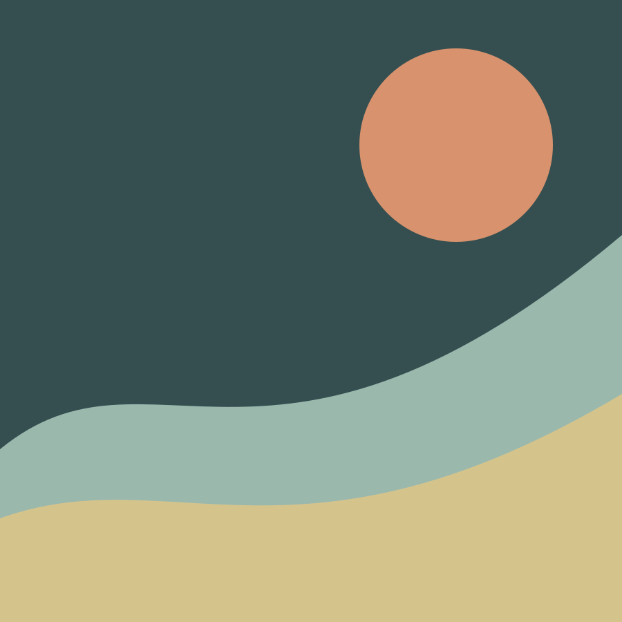

16 Oct — 09 Nov 2026
Where the River Remembers
Latitude 28 · New Delhi
A new body of paintings that follows water as witness, threshold and keeper of memory. Opening reception: 16 October, 6–9 pm.
Request invitation ↗In person
Upcoming

16 Oct — 09 Nov 2026
Latitude 28 · New Delhi
A new body of paintings that follows water as witness, threshold and keeper of memory. Opening reception: 16 October, 6–9 pm.
Request invitation ↗Past exhibitions
Method Gallery · Mumbai
Art & Soul · Bengaluru
Blueprint 12 · New Delhi